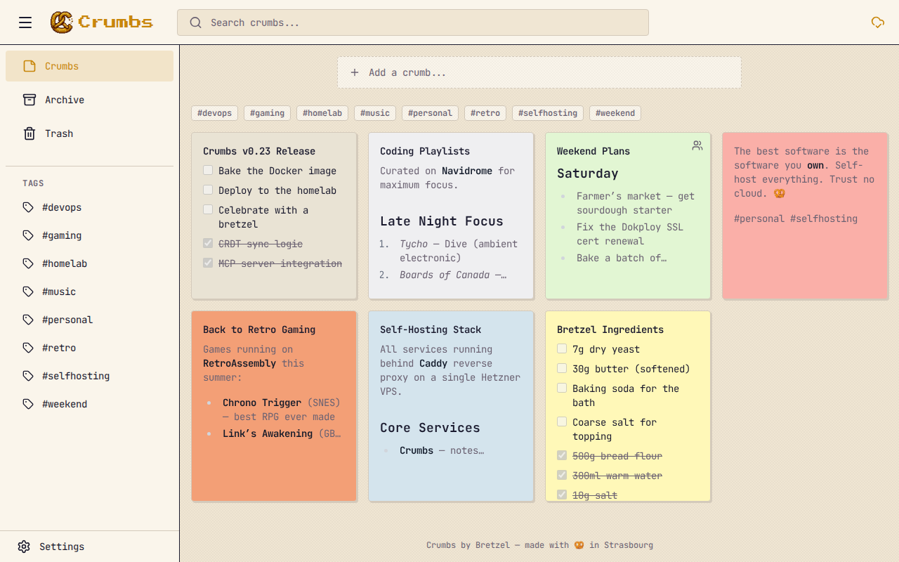
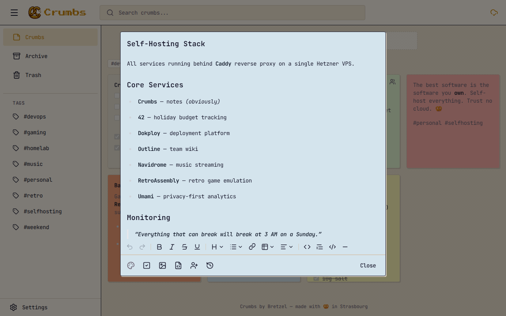
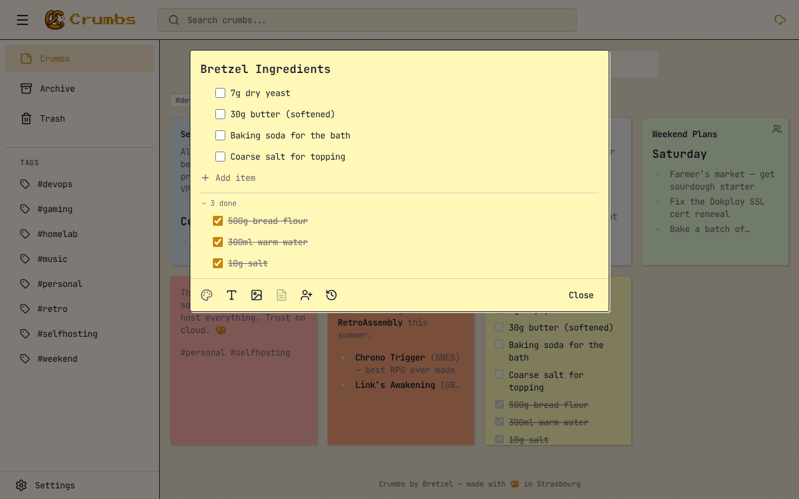
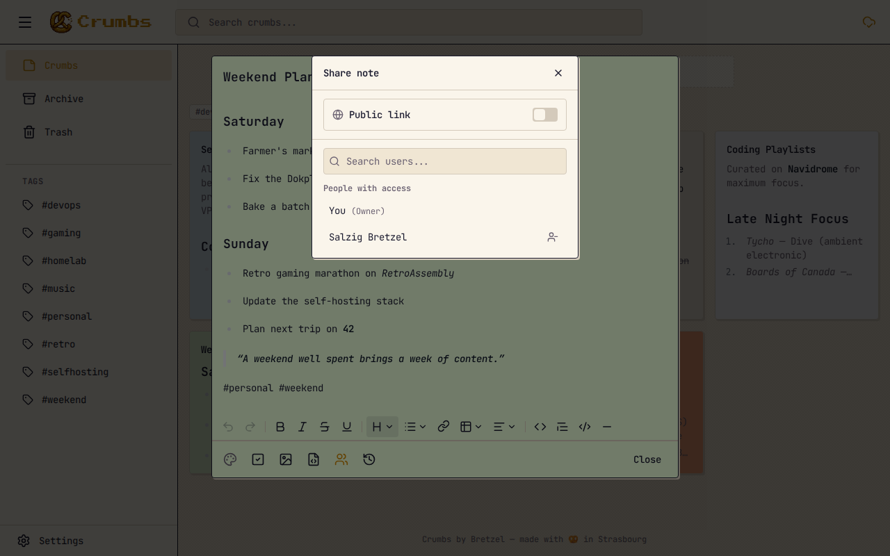
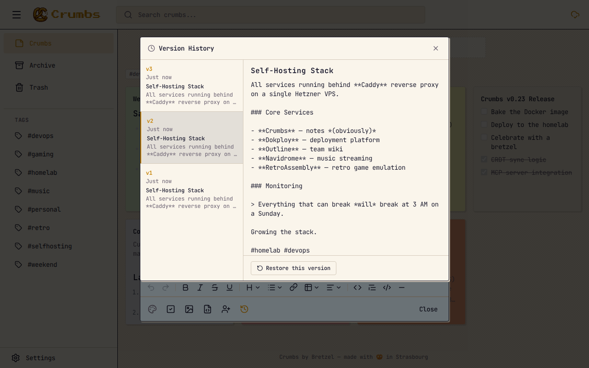
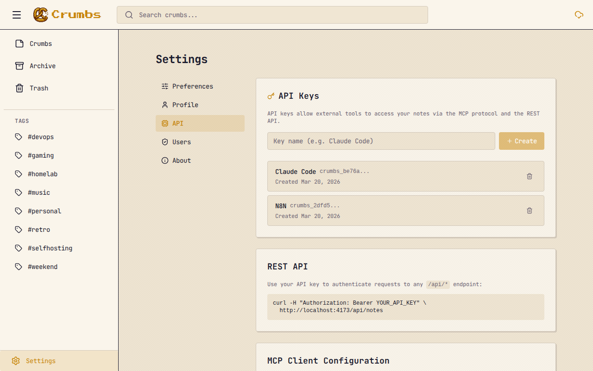
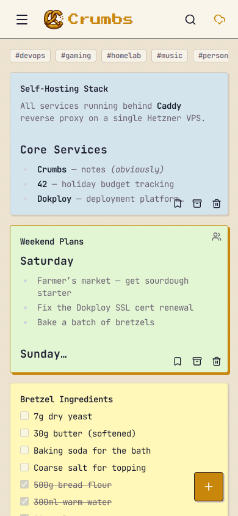
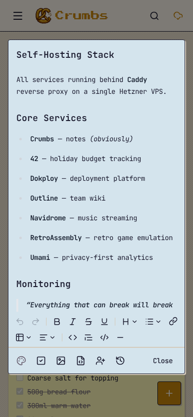
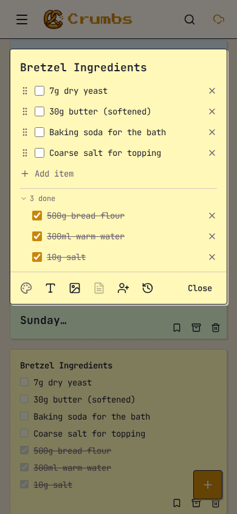

A self-hostable, offline-first note-taking app that respects your privacy.

Tiptap-powered WYSIWYG with full Markdown support. Bold, lists, code blocks, checklists, and more.
Works without internet. PWA with CRDT-based sync means your notes are always available.
One Docker command. Your data stays on your server. No cloud, no tracking, no nonsense.
Organize with tags, 12 note colors, and pinned notes. Your notes, your way.
Drag-and-drop images with auto-optimization. Works offline.
Find anything instantly. SQLite-powered search across all your notes and tags.
Full REST API with token auth. Integrate with n8n, Zapier, or scripts. Built-in MCP server for AI tools like Claude and Cursor.
Share one instance with your team or family. Admin manages accounts, each user gets their own private notes.
Sign in with Google, GitHub, or any OIDC provider. Or just use a password — your choice.
Share notes via public link or with other users. Full collaboration with per-user pins and archives.
Browse and restore previous versions of any note. Never lose important edits again.
Optional SMTP notifications for shares, security alerts, and account events. Opt out per user.








One file. One command. Done.
services:
slabs:
image: ghcr.io/notcubik/slabs:latest
ports:
- "3000:3000"
volumes:
- slabs_data:/data
volumes:
slabs_data:That's it.
Open localhost:3000, set a password, and start writing.